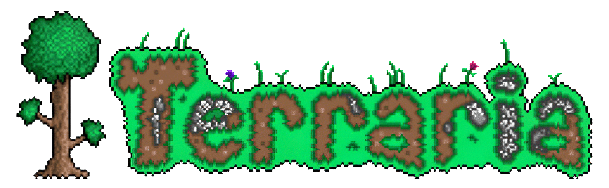
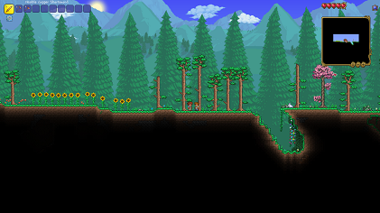

Terraria is a 2011 action-adventure sandbox game developed by Re-Logic.
The game was first released for Windows and has since been ported to other PC and console platforms.
The game features exploration, crafting, building, painting, and combat with a variety of creaturesin
a procedurally generated 2D world. Terraria is one of the best-selling video games of all time, selling
58.7 million copies as of 2024.
- Gameplay
- Development and release
- Reception
Gameplay
Terraria is a 2D sandbox game with gameplay that revolves
around exploration, building, crafting, combat, survival,
and mining, playable in both single-player and multiplayer
modes. The game has a 2D sprite tile-based graphical
style reminiscent of the 16-bit sprites found on the Super
NES. The game is noted for its classic exploration-adventure
style of gameplay, similar to games such as the Metroid series
and Minecraft.

Development and release
Development of Terraria began in January 2011 by Re-Logic, built
on the Microsoft XNA framework and written in C#. Re-Logic was
composed of Andrew "Redigit" Spinks, who designed and programmed the
game; Finn Brice, who, along with Spinks, did the graphic design for
the game. The music was composed by Scott Lloyd Shelly. The game
was released for Windows on May 16, 2011. In December 2011, the
game was updated to version 1.1, adding new monsters, bosses, NPCs,
and items. The update also included improvements to the game's world
generation technology and lighting system. In February 2012, the
developers announced that they would not continue development but
would release a final bug-fix patch. However, development resumed
in 2013 with Spinks asking the community for ideas to include in
future content updates.

Reception
Terraria received generally favorable reviews from critics, according
to review aggregator Metacritic. A review
for Destructoid included praise for Terraria as "full of depth".
Another reviewer praised Terraria's integration of some of Minecraft's
concepts into two dimensions. GameSpot praised Terraria's
exploration and feeling of accomplishment but criticized its lack of
tutorial or explicit directions. IGN praised the game, claiming that
Terraria: "expands on the familiar sandbox gameplay with a greater
emphasis on combat and adventure." Terraria received the #1 of 2011
Indie of the Year Player Choice on IndieDB. Terraria has been
described as a Minecraft clone by various video gaming media outlets.